if (!require("BiocManager", quietly = TRUE)) install.packages("BiocManager")
BiocManager::install(c("DESeq2", "vsn", "edgeR", "arrayQualityMetrics"))Multivariate Differential Gene Expression
Following MarineOmics Functional Genomics Tutorial step-by-step with a non-linear model and time as a factor
Goals
To follow the MarineOmics Fitting Multifactorial Models of Differential Expression walkthrough step-by-step with the gene count matrix from the coral-embryo-RNAseq project. I’ve copied and pasted many of the tutorial instructions and explanations in order for me to understand my data in context. Anything copied from MarineOmics is in blockquotes. I have simply replaced their pC02 environmental condition variable with leachate and their day time variable with hours post-fertilization, hpf .
Experimental design
Egg-sperm bundles were cross-fertilized from genetically distinct parent colonies resulting in ~30 embryos per vial
4 leachate levels (continuous variable)
- 0, 0.01, 0.1, 1 mg/L concentrations
3 embryonic stages (discrete variable)
4, 9, 14 hours post fertilization
cleavage, prawn chip, early gastrula
12 treatments, n = 4 or 5 per treatment
Each pooled samples therefore represents genetic variation of up to 6 distinct colonies

Exploratory PCAs & Heatmap
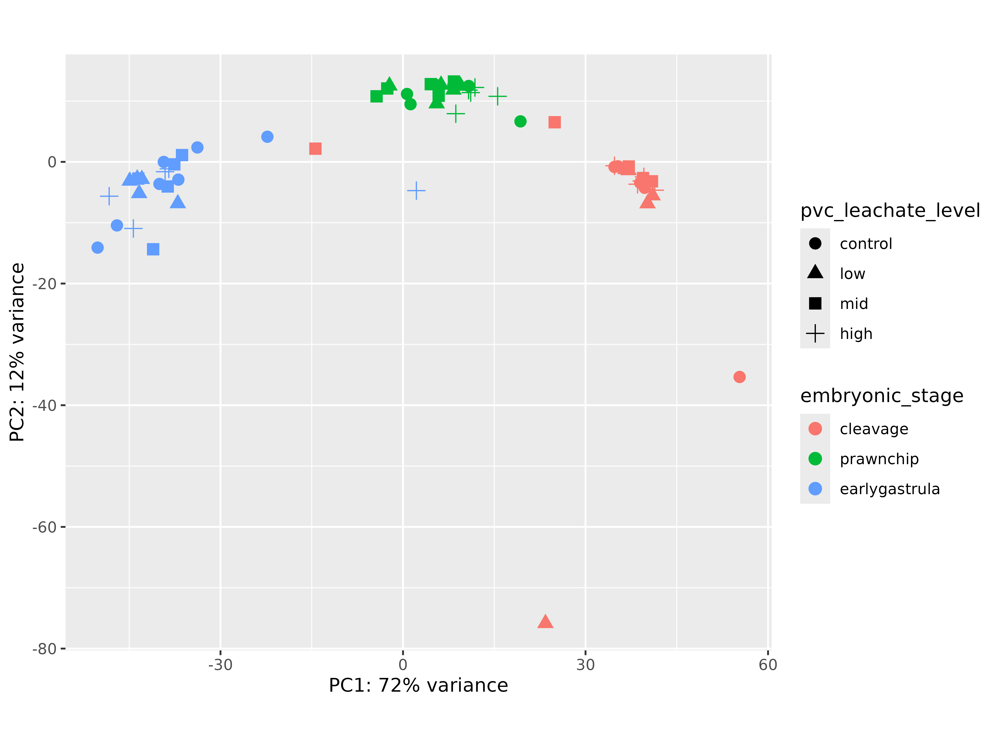
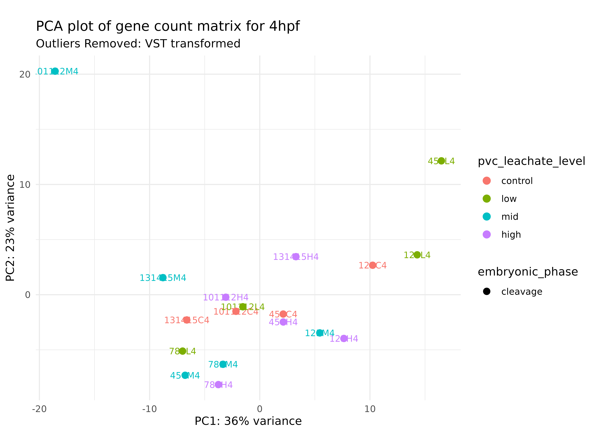
Install packages
if ("tidyverse" %in% rownames(installed.packages()) == 'FALSE')
install.packages('tidyverse')
if ("DESeq2" %in% rownames(installed.packages()) == 'FALSE')
install.packages('DESeq2')
if ("edgeR" %in% rownames(installed.packages()) == 'FALSE')
install.packages('edgeR')
if ("ape" %in% rownames(installed.packages()) == 'FALSE')
install.packages('ape')
if ("vegan" %in% rownames(installed.packages()) == 'FALSE')
install.packages('vegan')
if ("GGally" %in% rownames(installed.packages()) == 'FALSE')
install.packages('GGally')
if ("arrayQualityMetrics" %in% rownames(installed.packages()) == 'FALSE')
install.packages('arrayQualityMetrics')
if ("rgl" %in% rownames(installed.packages()) == 'FALSE')
install.packages('rgl')
if ("MASS" %in% rownames(installed.packages()) == 'FALSE')
install.packages('MASS')
if ("data.table" %in% rownames(installed.packages()) == 'FALSE')
install.packages('data.table')
if ("plyr" %in% rownames(installed.packages()) == 'FALSE')
install.packages('plyr')
if ("lmtest" %in% rownames(installed.packages()) == 'FALSE')
install.packages('lmtest')
if ("reshape2" %in% rownames(installed.packages()) == 'FALSE')
install.packages('reshape2')
if ("Rmisc" %in% rownames(installed.packages()) == 'FALSE')
install.packages('Rmisc')
if ("statmod" %in% rownames(installed.packages()) == 'FALSE')
install.packages('statmod')
if ("stringr" %in% rownames(installed.packages()) == 'FALSE')
install.packages('stringr')Load packages
# Load packages
library(DESeq2)
library(edgeR)
library(tidyverse)
library(ape)
library(vegan)
library(GGally)
library(arrayQualityMetrics)
library(rgl)
#library(adegenet)
library(MASS)
library(data.table)
library(plyr)
library(lmtest)
library(reshape2)
library(Rmisc)
#library(lmerTest)
library(statmod)
library(stringr)Import gene counts
In this count matrix, each row represents a gene, each column a sequenced RNA library, and the values give the estimated counts of fragments that were assigned to the respective gene in each library by HISAT2
check.names = FALSEremoved the ‘X’ from in front of sample id’s in the column headers
gcm <- read.csv("../output/05_count/gene_count_matrix.csv", row.names="gene_id", check.names = FALSE)
Note
gcm is the unfiltered gene count matrix of all 63 samples
- The raw unfiltered, untransformed, count matrix shows counts of whole numbers (integers)
- Each column is a sample
- Each row is a gene
- A sample id describes parental crosses (the first string of numbers), the pollution exposure (C, L, M, H), and the embryonic stage (4, 9, 14)
gcm_filt <- read_csv("../output/06_tidyup/gcm_filt.csv")
Note
gcm_filt is the gene count matrix that has been filtered to remove low gene counts, and 2 outlier samples ( 131415L4 and 789C4 ) that had poor HISAT alignment and did not group in the exploratory PCA
Import metadata
metadata <- read_csv("../metadata/metadata.csv")
Note
metadata is all 63 samples
metadata_filt <- read_csv("../metadata/metadata_filt.csv")
# Reorder factors
metadata_filt$embryonic_stage <- as.factor(metadata_filt$embryonic_stage) %>% fct_relevel("cleavage", "prawnchip", "earlygastrula")
metadata_filt$pvc_leachate_level <- as.factor(metadata_filt$pvc_leachate_level) %>% fct_relevel("control", "low", "mid", "high")
metadata_filt$hpf <- as.factor(metadata_filt$hpf) %>% fct_relevel("4", "9", "14")
Note
metadata_filt is prefiltered to remove low gene counts and has 2 outlier samples removed, containing info for 61 samples
Filter and visualize read counts
Plot distribution of unfiltered read counts across all samples
ggplot(data = data.frame(rowMeans(gcm)),
aes(x = rowMeans.gcm.)) +
geom_histogram(fill = "grey", binwidth = 5) +
xlim(0, 500) +
ylim(0, 5000) +
theme_classic() +
labs(title = "Distribution of unfiltered reads") +
labs(y = "Density", x = "Raw read counts",
title = "Read count distribution: untransformed, unnormalized, unfiltered")
Note
As you can see in the above plot, the raw distribution of all read counts takes on a left-skewed negative binomial distribution.
Most DE packages assume that read counts possess a negative binomial distribution. The negative binomial distribution is an extension of distributions for binary variables such as the Poisson distribution, allowing for estimations of “equidispersion” and “overdispersion”, equal and greater-than-expected variation in expression attributed to biological variability. - MarineOmics
While looking at the distribution of your raw reads is useful, these are not in fact the data you will be inputting to tests of differential expression. Let’s plot the distribution of filtered reads normalized by library size, expressed as log2 counts per million reads (logCPM). These are the reads we will use in our test, and after we plot their distribution, we will conduct one more, slightly more robust, test of our data’s fit to the negative binomial distribution using residuals from fitted models. - MarineOmics
Distribution of normalized, filtered read counts
# Make a DGEList object for edgeR
y <- DGEList(counts = gcm_filt, remove.zeros = TRUE)
# Let's remove samples with less than 0.5 cpm (this is ~10 counts in the count file) in fewer then 3/60 samples
keep <- rowSums(cpm(y) > .5) >= 3
table(keep)keep
FALSE TRUE
2 22629
Important
22,632 genes were retained after removing outlier samples and filtering for low gene counts
# Set keep.lib.sizes = F and recalculate library sizes after filtering
y <- y[keep, keep.lib.sizes = FALSE]
y <- calcNormFactors(y)
# Calculate logCPM
df_log <- cpm(y, log = TRUE, prior.count = 2)
# Plot distribution of filtered logCPM values
ggplot(data = data.frame(rowMeans(df_log)),
aes(x = rowMeans.df_log.) ) +
geom_histogram(fill = "grey") +
theme_classic() +
labs(y = "Density", x = "Filtered read counts (logCPM)",
title = "Distribution of normalized, filtered read counts")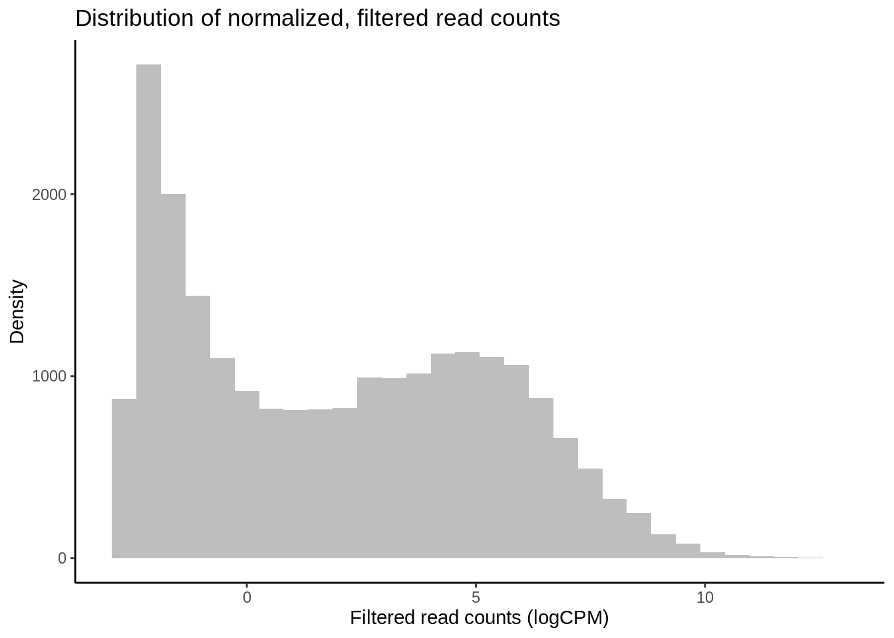
Note
| Region of Plot | Interpretation |
|---|---|
| Left tail (steep drop) | Near-zero or low-expression genes, NB distribution |
| Middle bulk | Actively expressed genes — roughly normal in logCPM |
| Right tail | Highly expressed genes (often a small fraction) |
{kind=link}
MDS plot visualizing experimental factors
Before analyzing our data, it is essential that we look at the multivariate relationships between our samples based on transcriptome-wide expression levels. Below is example code and output for a principal coordinates analysis (PCOA) plot that visualizes multifactorial RNA-seq replicates according to two predictor variables across major and minor latent variables or PCOA axes. - MarineOmics
# Export pcoa loadings
dds.pcoa = pcoa(vegdist(t(df_log <- cpm(y, log = TRUE, prior.count = 2)),
method = "euclidean") / 1000)
# Create df of MDS vector loading
scores <- dds.pcoa$vectors
## Plot pcoa loadings of each sample, grouped by hpf and pvc_leachate_level
# Calculate % variation explained by each eigenvector
percent <- dds.pcoa$values$Eigenvalues
cumulative_percent_variance <- (percent / sum( percent)) * 100
# Prepare information for pcoa plot, then plot
color <- c("steelblue1", "tomato1", "goldenrod1")
par(mfrow = c(1, 1))
plot(
scores[, 1],
scores[, 2],
cex = .5,
cex.axis = 1,
cex.lab = 1.25,
xlab = paste("PC1, ", round(cumulative_percent_variance[1], 2), "%"),
ylab = paste("PC2, ", round(cumulative_percent_variance[2], 2), "%")
)
# Add visual groupings to pcoa plot
ordihull(
scores,
as.factor(metadata_filt$hpf),
border = NULL,
lty = 2,
lwd = .5,
label = F,
col = color,
draw = "polygon",
alpha = 100,
cex = .5
)
ordispider(scores, as.factor(metadata_filt$group), label = F) # Vectors connecting samples in same hpf x leachate group
ordilabel(scores, cex = 0.5) # Label sample IDs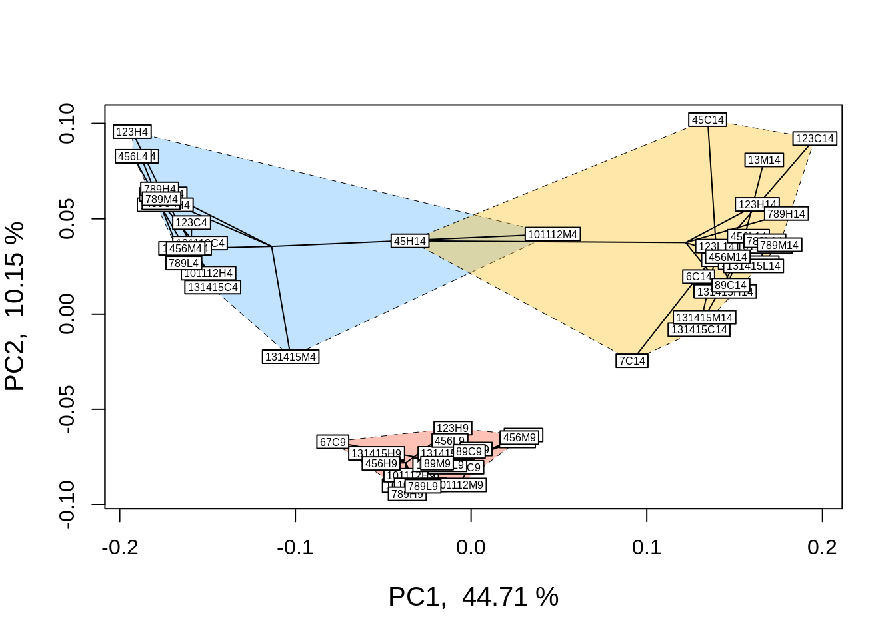
Note
Our data groups largely by hours post fertilization (hpf), the blue group is 4 hpf, red is 9 hpf, and yellow is 14 hpf.
logCPM.pca <- prcomp(t (df_log))
logCPM.pca.proportionvariances <-
((logCPM.pca$sdev ^ 2) / (sum(logCPM.pca$sdev ^ 2))) * 100
## Do treatment groups fully segregate? Wrap samples by hpf x leachate, not just hpf
# Replot using logCPM.pca
plot(
logCPM.pca$x,
type = "n",
main = NA,
xlab = paste("PC1, ", round(logCPM.pca.proportionvariances[1], 2), "%"),
ylab = paste("PC2, ", round(logCPM.pca.proportionvariances[2], 2), "%")
)
points(logCPM.pca$x,
col = "black",
pch = 16,
cex = 1)
colors2 <-
c("steelblue1",
"dodgerblue2",
"tomato1",
"coral",
"goldenrod1",
"goldenrod3")
ordihull(
logCPM.pca$x,
metadata_filt$group,
border = NULL,
lty = 2,
lwd = .5,
col = colors2,
draw = "polygon",
alpha = 75,
cex = .5,
label = T
)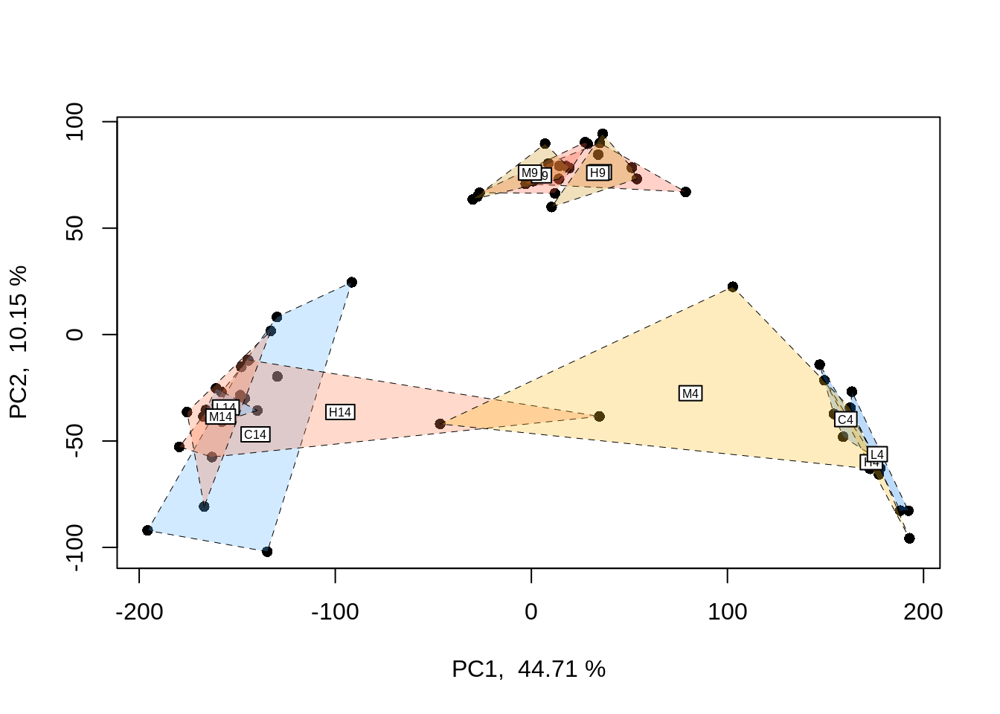
Note
Difficult to ascertain any leachate patterns within hours post fertilization (embryonic stage) groupings
Non-linear effects
One of the simplest non-linear relationships that can be fitted to the expression of a transcript across an continuous variable is a second-order polynomial, otherwise known as a quadratic function, which can be expressed as yi=μ+β1x2+β2xyi=μ+β1x2+β2x where yy is the abundance of a given transcript (ii), μμ is the intercept, and yy is the continuous variable. For the parabola generated by fitting a second-order polynomial, β1β1 > 0 opens the parabola upwards while β1β1 < 0 opens the parabola downwards. The vertex of the parabola is controlled by β2β2 such that when β1β1 is negative, greater β2β2 values result in the vertex falling at higher values of xx.
Quadratic polynomials applied to phenotypic performance curves commonly possess negative β1β1 values with positive β2β2 values: a downard-opening parabola with a positive vertex. However, quadtratic curves fitted to gene expression data can take on a variety of postiive or negative forms similar to exponential curves, saturating curves, and parabolas. For instance, the expression of a gene may peak an intermediate level of an environmental level before crashing or it may exponentially decline across that variable. Such trends may better model changes in the transcription of a gene compared to a linear model. To get started, we will fit non-linear second order polynomials before testing for whether model predictions for a given gene are significantly improved by a non-linear linear model. - MarineOmics
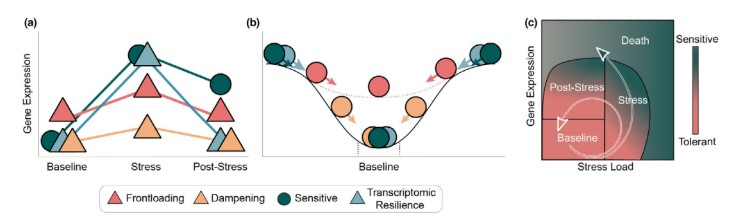
Non-linear effects: example in edgeR
Estimate dispersion
Let’s fit a second-order polynomial for the effect of leachate/leachate using edgeR. Using differential expression tests, we will then determine whether leachate/leachate affected a gene’s rate of change in expression and expression maximum by applying differential expression tests to β1 and β2 parameters. By testing for differential expression attributed to intereactions between time and β1 or β2 , we will then test for whether these parameters were significantly different across exposure times such that 0.5 hpfs and 7 hpfs of acclimation to leachate/leachate altered the rate of change in expression across leachate/leachate (β1 ) or the maximum of expression (β2 ).
Since this is the first time we’re fitting models to our data in this walkthrough, we will also output some important plots to help us explore and QC model predictions as we work toward testing for differential expression attributed to non-linear effects. - MarineOmics
# Estimate dispersion coefficients
y1 <- estimateDisp(y, robust = TRUE) # Estimate mean dispersal
# Plot tagwise dispersal and impose w/ mean dispersal and trendline
plotBCV(y1) 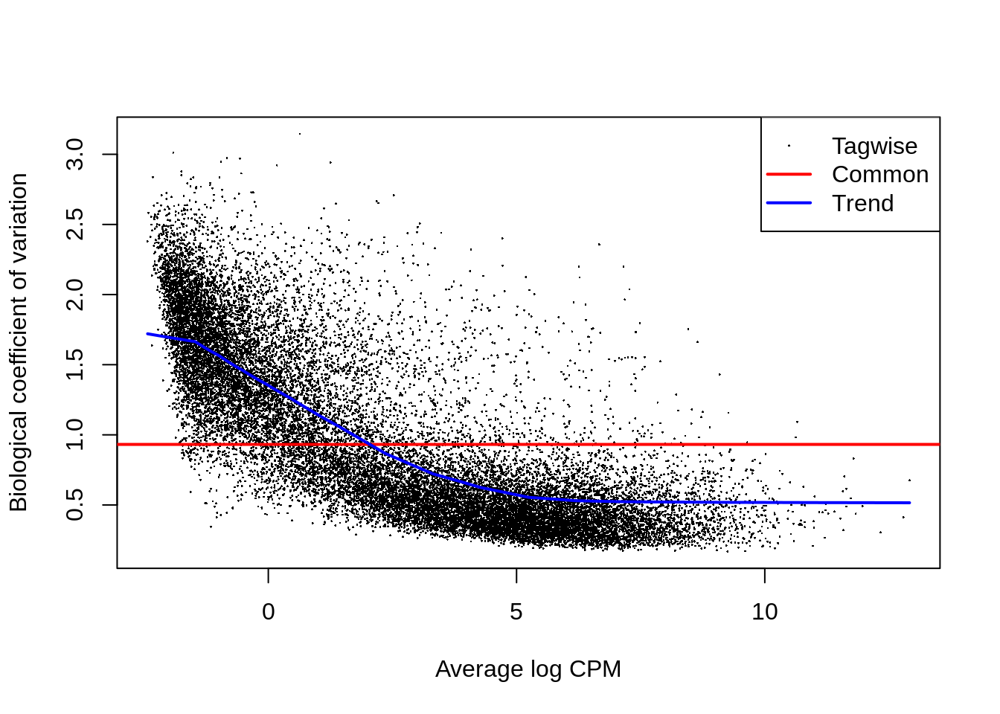
The above figure is an output of the plotBCV() function in edgeR, which visualises the biological coefficient of variation (otherwise known as dispersion) parameter fitted to individual genes (black circles), fitted across gene expression level (blue trendline), and averaged across the entire transcriptome (red horizontal line).
The BCV/dispersion parameter is a necessary parameter, symbolized as θ in model specification, that must be estimated in negative binomial GLMs. θ represents the ‘overdispersion’ or the shape of a negative binomial distribution and is thus important for defining the distribution of read count data for a given gene during model fitting. Dispersion or θ can be input during model fitting in edgeR using the three estimates visualized in the above regression.
Note
Low expression (logCPM < ~2):
- Large variability in dispersion estimates (spread-out dots)
- This is expected: low counts are noisy and unstable
- Many of these genes may get downweighted or filtered
Medium-to-high expression:
- Dots cluster more tightly around the trend.
- The blue line slopes down — dispersion tends to decrease with increasing expression, then flattens out.
Red vs Blue lines:
- A common dispersion (red) that is higher or lower than the trend (blue), could indicate a poor fit or biological overdispersion.
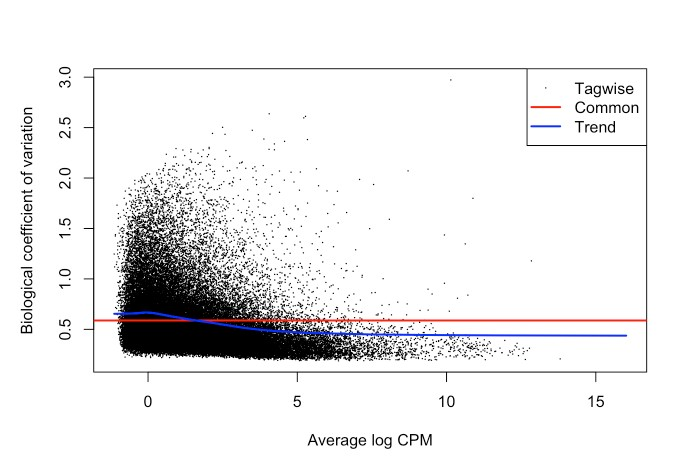
Fit GLM
Now that we’ve estimated dispersion, we will use these estimates to fit negative binomial GLMs to our read count data using the glmQLFit() function in edgeR, one of the more robust model fitting functions offered by edgeR
Using numeric values instead of factors so…
hpf(… our time component!)hours post fertilization (4, 9, & 14) associated with specific embryonic development stages (cleavage, prawn chip, early gastrulation)
NOT a 1-to-1 equivalent to the tutorial…
leachate(… our environmental condition!)- equivalent to pCO2 in the tutorial
# Square environmental condition variable
metadata_filt <- metadata_filt %>%
mutate(leachate_2 = leachate^2)
# pull out variables values for model
hpf <- metadata_filt$hpf
leachate <- metadata_filt$leachate
leachate_2 <- metadata_filt$leachate_2
# Fit multifactorial design matrix
design_nl <- model.matrix(~ 1 + hpf + leachate + leachate_2 + hpf:leachate_2 + hpf:leachate)
# Generate multivariate edgeR glm
# Fit quasi-likelihood, neg binom linear regression
nl_fit <-
glmQLFit(y1, design_nl) # Fit multivariate model to countscolnames(nl_fit$design)[1] "(Intercept)" "hpf9" "hpf14" "leachate"
[5] "leachate_2" "hpf9:leachate_2" "hpf14:leachate_2" "hpf9:leachate"
[9] "hpf14:leachate" | Coefficient | What it Represents |
|---|---|
| (Intercept) | The baseline expression: at hpf = 4 and leachate = 0 |
| hpf9 | The difference in expression at 9 hpf vs 4 hpf (when leachate = 0) |
| hpf14 | The difference in expression at 14 hpf vs 4 hpf (when leachate = 0) |
| leachate | The effect of increasing leachate at 4 hpf |
| leachate_2 | The non-linear effect of increasing leachate |
| hpf9:leachate_2 | How the non-linear leachate effect at 9 hpf differs from the leachate effect at 4 hpf |
| hpf14:leachate_2 | How the non-linear leachate effect at 14 hpf differs from the leachate effect at 4 hpf |
| hpf9:leachate | How the leachate effect at 9 hpf differs from the leachate effect at 4 hpf |
| hpf14:leachate | How the leachate effect at 14 hpf differs from the leachate effect at 4 hpf |
Leachate effects
## Test for effect of leachate and leachate^2
nl_leachate_2 <-
glmQLFTest(nl_fit,
coef = 5,
contrast = NULL,
poisson.bound = FALSE) # Estimate significant DEGs
nl_leachate <-
glmQLFTest(nl_fit,
coef = 4,
contrast = NULL,
poisson.bound = FALSE) # Estimate significant DEGs
# Make contrasts
is.de_nl_leachate <-
decideTestsDGE(nl_leachate, adjust.method = "fdr", p.value = 0.05)
is.de_nl_leachate_2 <-
decideTestsDGE(nl_leachate_2, adjust.method = "fdr", p.value = 0.05)Summarize DEGs
# Summarize differential expression attributed to leachate
summary(is.de_nl_leachate) leachate
Down 87
NotSig 20940
Up 1602# Summarize differential expression attributed to leachate_2
summary(is.de_nl_leachate_2) leachate_2
Down 2028
NotSig 20495
Up 106We have just fit our first GLM to our read count data and have tested for differential expression across leachate_2/leachate . At this stage, it is important to output a few diagnostic plots. For example, edgeR has the function ‘plotMD()’ which, when input with a differential expression test object such as a glmQLFTest result, will produce a plot of differential expression log2 fold change values across gene expression level (log2 counts per million or logCPM). logCPM is a major component of gene function and statistical power, and is a useful variable to plot in order to make initial assessments of differential expression results.
Visualizations of differential expression (logFC) across baseline logCPM can be produced by the plotMD() (short for “mean-difference”) function in edgeR. To do so, plotMD() is input with the results of glmQLFTest, which we used above to test for differential expression attributable to the parameters leachate/leachate and leachate/leachate^2. Let’s produce two such plots for both parameters where “leachate/leachate_2” represents the leachate/leachate^2 parameter:
# Plot differential expression due to leachate and leachate^2
plotMD(nl_leachate)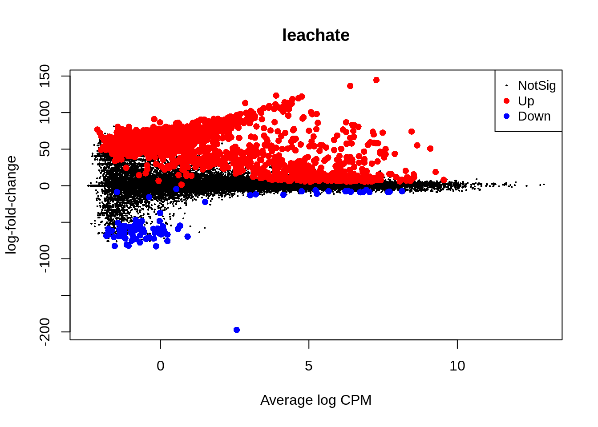
plotMD(nl_leachate_2)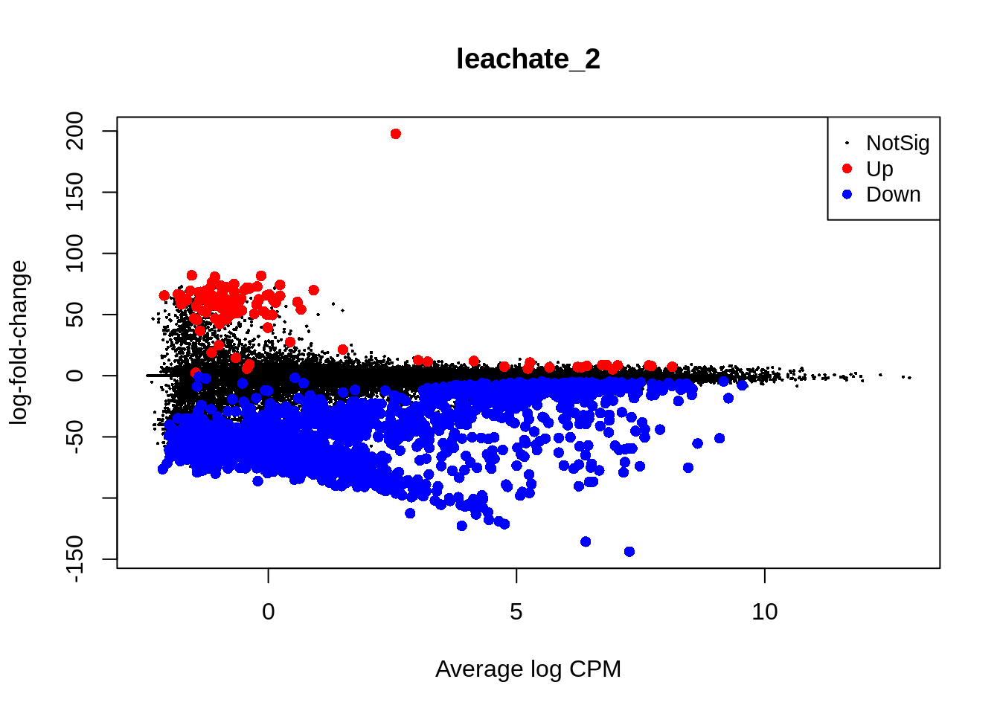
Caution
The non-linear term appears to be a perfect flip of the linear term. Is this expected? Or does this indicate the non-linear term doesn’t describe the data any better than the linear term?
In the two mean-difference plots above, red and blue colored points represent genes exhibiting significant differential expression attributed to leachate or leachate_2 . As you can see, there is a lot of differential expression in this experiment resulting from both of these parameters. Part of the reason for this large number of significant differentially expressed genes (DEGs) is that we have not applied a cutoff value for logFC. For example, a logFC cutoff of 2.0 value would not designate any genes with an absolute logFC value less than 0.05 as a significant DEG. However, deciding on a logFC cutoff is very tricky! Since we used a continuous predictor for leachate during model fitting, the values in the y-axis of this plot are slopes representing the rate of change in expression per unit leachate (mg/L). Determining what slope represents a significant change in expression requires informed reasoning and a strong body of prior data. For that reason, we are not applying a logFC cutoff in this walkthrough.
Next, we will use glmQLFTest() to test for differential expression attributed to interactions between hpf and leachate or hpf and leachate_2 before producing mean-difference plots visualizing DEGs derived from these two interactions.
glmQLFTest() is an edgeR function for a Generalized Linear Model Quasi-Likelihood F-test, which tests for differential expression between conditions using quasi-likelihood F-tests in a negative binomial generalized linear model (GLM) framework.
colnames(nl_fit$design)[1] "(Intercept)" "hpf9" "hpf14" "leachate"
[5] "leachate_2" "hpf9:leachate_2" "hpf14:leachate_2" "hpf9:leachate"
[9] "hpf14:leachate" Time interaction effects
## Test for each term
nl_hpf9 <-
glmQLFTest(nl_fit,
coef = 2,
contrast = NULL,
poisson.bound = FALSE) # Estimate significant DEGs
nl_hpf14 <-
glmQLFTest(nl_fit,
coef = 3,
contrast = NULL,
poisson.bound = FALSE) # Estimate significant DEGs
nl_hpf9_leachate_2_int <-
glmQLFTest(nl_fit,
coef = 6,
contrast = NULL,
poisson.bound = FALSE) # Estimate significant DEGs
nl_hpf14_leachate_2_int <-
glmQLFTest(nl_fit,
coef = 7,
contrast = NULL,
poisson.bound = FALSE) # Estimate significant DEGs
nl_hpf9_leachate_int <-
glmQLFTest(nl_fit,
coef = 8,
contrast = NULL,
poisson.bound = FALSE) # Estimate significant DEGs
nl_hpf14_leachate_int <-
glmQLFTest(nl_fit,
coef = 9,
contrast = NULL,
poisson.bound = FALSE) # Estimate significant DEGs
# Make contrasts
is.de_nl_hpf9 <-
decideTestsDGE(nl_hpf9, adjust.method = "fdr", p.value = 0.05)
is.de_nl_hpf14 <-
decideTestsDGE(nl_hpf14, adjust.method = "fdr", p.value = 0.05)
is.de_nl_hpf9_leachate_2_int <-
decideTestsDGE(nl_hpf9_leachate_2_int, adjust.method = "fdr", p.value = 0.05)
is.de_nl_hpf14_leachate_2_int <-
decideTestsDGE(nl_hpf14_leachate_2_int, adjust.method = "fdr", p.value = 0.05)
is.de_nl_hpf9_leachate_int <-
decideTestsDGE(nl_hpf9_leachate_int, adjust.method = "fdr", p.value = 0.05)
is.de_nl_hpf14_leachate_int <-
decideTestsDGE(nl_hpf14_leachate_int, adjust.method = "fdr", p.value = 0.05)Summarize DEGs
summary(is.de_nl_hpf9) hpf9
Down 3314
NotSig 11596
Up 7719summary(is.de_nl_hpf14) hpf14
Down 4329
NotSig 7777
Up 10523summary(is.de_nl_hpf9_leachate_2_int) hpf9:leachate_2
Down 27
NotSig 22234
Up 368summary(is.de_nl_hpf14_leachate_2_int) hpf14:leachate_2
Down 31
NotSig 21961
Up 637summary(is.de_nl_hpf9_leachate_int) hpf9:leachate
Down 263
NotSig 22353
Up 13summary(is.de_nl_hpf14_leachate_int) hpf14:leachate
Down 454
NotSig 22155
Up 20Taking a detour from tests for DEGs attributed to non-linear interactions, we can now output the residuals of our GLMs in order to better test for whether our data fit the assumptions of negative binomial distribution families. If the distribution of residuals from our GLMs are normal, this indicates that our data meet the assumption of the negative binomial distribution. We will use the equation for estimating Pearson residuals:
\[ residual=\frac{observed−fitted}{\sqrt{fitted(dispersion∗fitted)}} \]
# Output observed
y_nl <- nl_fit$counts
# Output fitted
mu_nl <- nl_fit$fitted.values
# Output dispersion or coefficient of variation
phi_nl <- nl_fit$dispersion
# Calculate denominator
v_nl <- mu_nl*(1+phi_nl*mu_nl)
# Calculate Pearson residual
resid.pearson <- (y_nl-mu_nl) / sqrt(v_nl)
# Plot distribution of Pearson residuals
ggplot(data = melt(as.data.frame(resid.pearson)), aes(x = value)) +
geom_histogram(fill = "grey") +
xlim(-2.5, 5.0) +
theme_classic() +
labs(title = "Distribution of negative binomial GLM residuals",
x = "Pearson residuals",
y = "Density")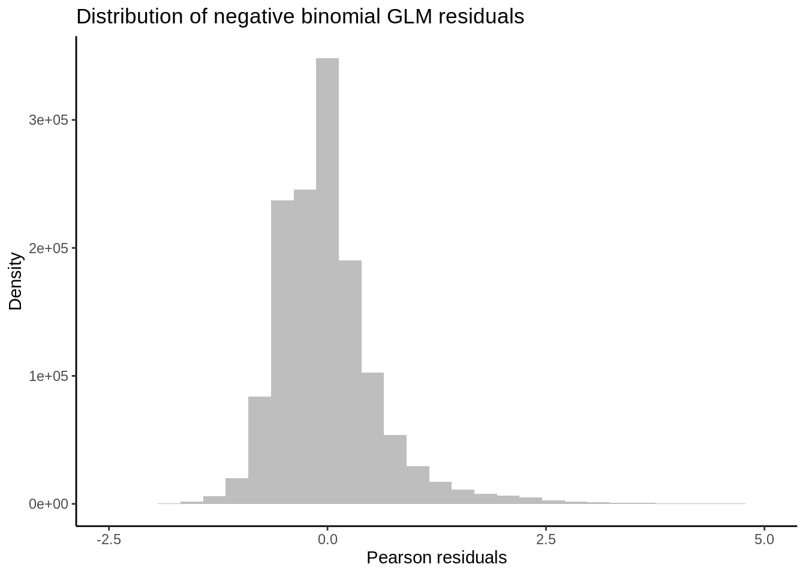
Note
Our residuals (model values minus actual values) appear to be normally distributed, indicating that our data fit the negative binomial distribution assumed by the GLM.
Now let’s get back to analyzing non-linear effects on gene expression!
Plotting non-linear effects
## Bin transcripts based on (i) whether they have a significant positive or negative vertex and then (ii) whether they showed significant interactions between beta1 (vertex value) and time.
# Export diff expression data for transcripts with significant DE associated with leachate^2 parameter
nl_leachate_2_sig <-
topTags(
nl_leachate_2,
n = Inf,
adjust.method = "BH",
p.value = 0.05
)
nl_leachate_2_sig_geneids <- row.names(nl_leachate_2_sig) #Output a list of geneids associated with sig leachate^2 effect
nl_leachate_sig <-
topTags(
nl_leachate,
n = Inf,
adjust.method = "BH",
p.value = 0.05
)
nl_leachate_sig_geneids <- row.names(nl_leachate_sig) #Output a list of geneids associated with sig leachate effect
# Create tabulated dataframe of mean expression across each leachate level with metadata for transcript ID and timepoint
logCPM_df <- as.data.frame(df_log)
# Create tabularized df containing all replicates using 'melt' function in reshape2
logCPM_df$geneid <- row.names(logCPM_df)
tab_exp_df <- melt(logCPM_df,
id = c("geneid"))
# Add covariate information for hpf and leachate
tab_exp_df <- tab_exp_df %>%
mutate(
leachate = str_extract(variable, "[CLMHN]"), # extract treatment letter
hpf = as.numeric(str_extract(variable, "\\d+$")) # extract trailing number (e.g. 4, 9, 14)
)
# Correct leachates to exact values
tab_exp_df <- tab_exp_df %>%
mutate(
leachate_code = leachate, # preserve original letter
leachate = recode(leachate_code,
C = 0,
L = 0.01,
M = 0.1,
H = 1
)
)
# Create binary variable in df_all_log for significant non-linear expression
tab_exp_df$leachate_2_sig <-
ifelse(tab_exp_df$geneid %in% nl_leachate_2_sig_geneids, "Yes", "No")
tab_exp_df$leachate_sig <-
ifelse(tab_exp_df$geneid %in% nl_leachate_sig_geneids, "Yes", "No")
# Create a binary variable related to up or down-regulation
up_genes <- filter(nl_leachate_sig$table, logFC > 0)
tab_exp_df$logFC_dir <-
ifelse(tab_exp_df$geneid %in% row.names(up_genes), "Up", "Down")
# Add geneid to nl_leachate_int$coefficients
#nl_leachate_int$coefficients$geneid <- row.names(nl_leachate_int$coefficients)
# Estimate average logCPM per gene per timepoint
tab_exp_avg <- summarySE(
measurevar = "value",
groupvars = c("leachate", "hpf", "geneid",
"leachate_sig", "leachate_2_sig", "logFC_dir"),
data = tab_exp_df
)
# First exploratory plot of non-linear expression grouping by exposure time and direction of differential expression
ggplot(data = filter(tab_exp_avg, leachate_2_sig == "Yes"),
aes(x = leachate, y = value)) +
geom_path(
alpha = 0.09,
size = 0.25,
stat = "identity",
aes(group = as.factor(geneid))) +
facet_grid(logFC_dir ~ hpf) +
theme_classic() +
theme(strip.background = element_blank()) +
labs(y = "Avg logCPM", title = "Non-linear changes in GE output by edgeR")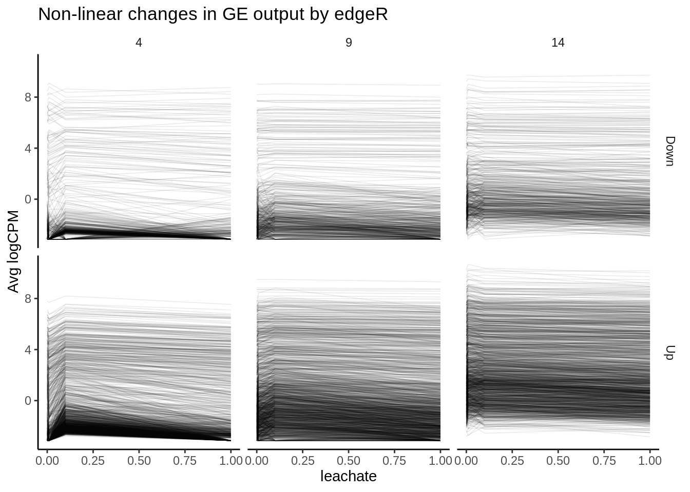
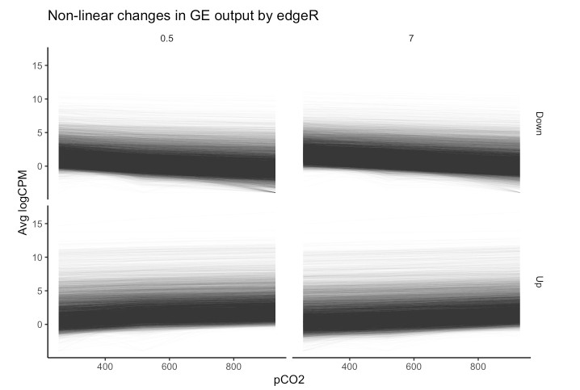
Our plots of non-linear changes in gene expression appear to include many trends that appear… well, linear. This is a pervasive issue in modeling non-linear regressions, and one potential pitfall of using outputs from packages such as edgeR or DESeq2 alone in testing for non-linear effects. The FDR-adjusted p -values we have used determine significance of non-linear effects essentially tell us the probability that a parameter value equal to or greater to what we have fitted could be generated given a random distribution of read counts. The p -value is not a representation of the strength of a non-linear effect relative to a linear effect. Numerous genes that nominally show significant non-linear effects of leachate may be only weakly affected, and a linear effect may in fact be more probable than a non-linear one despite what our p-values tell us. Instead of asking “for what genes may there be significant, non-linear effects of leachate ?”, we should ask “for what genes should we test for significant, non-linear effects?”.
Is non-linear model term appropriate?
One of the best ways to determine whether a non-linear model is appropriate for a transcript is to determine whether it is more probable that its expression is linear or non-linear relative to a continuous predictor. We can calculate this relative probability using a likelihood ratio test (LRT). In the code chunk below, we will fit linear and 2nd order non-linear models to the expression of each gene before applying LRTs to each transcript. We will then further filter our edgeR dataset based on (i) significant differential expression attributed to non-linear effects and (ii) a significant LRT ratio supporting non-linear effects. Then, we will replot the expression levels of this re-filtered set. The code below fits gaussian linear models to log2-transformed CPM values, but can be adjusted to fit negative binomial GLMs to untransformed CPM similar to edgeR and DESeq2 by setting using the MASS package to set ‘family = negative_binomial(theta = θ)’ where θ = the dispersion estimate or biological coefficient of variation for a given transcript.
## Using dlply, fit linear and non-linear models to each gene
# Create leachate^2 variable in df_all_log
tab_exp_df$leachate_2 <- tab_exp_df$leachate^2
# Fit linear models - should take about 4 minutes
lms <- dlply(tab_exp_df, c("geneid"), function(df)
lm(value ~ hpf + leachate + hpf:leachate, data = df))
# Fit non-linear models - should take about 2 minutes
nlms <- dlply(tab_exp_df, c("geneid"), function(df)
lm(value ~ hpf + leachate + leachate_2 + hpf:leachate + hpf:leachate_2 , data = df))
# Output nlm coefficients into dataframe
nlms_coeff <- ldply(nlms, coef)
head(nlms_coeff)| geneid | (Intercept) | hpf | leachate | leachate_2 | hpf:leachate | hpf:leachate_2 |
|---|---|---|---|---|---|---|
| 1 | 5.954819 | -0.2261158 | -0.1295123 | 0.0726924 | 0.0263552 | 0.0063686 |
| 10 | 0.436059 | 0.4712947 | 4.8252302 | -5.7940731 | -0.3259356 | 0.3867017 |
| 100 | 4.821776 | -0.1490371 | 0.5170631 | 0.1787126 | 0.0095062 | -0.0581879 |
| 1000 | 4.707819 | -0.0000278 | -4.8428576 | 3.8209591 | 0.5423490 | -0.4586912 |
| 10000 | 7.625427 | -0.0520989 | -1.8326246 | 1.6962169 | 0.2569624 | -0.2480386 |
| 10001 | 5.088070 | -0.2781282 | -10.2521934 | 9.2651150 | 1.6781383 | -1.5220794 |
LRT
## Apply LRTs to lm's and nlm's for each transcript - should take about 2 minutes
lrts <- list() # Create list to add LRT results to
for (i in 1:length(lms)) {
lrts[[i]] <- lrtest(lms[[i]], nlms[[i]]) # Apply LRTs with for loop
}
## Filter lrt results for transcripts with significantly higher likelihoods of nl model
lrt_dfs <- list()
# Turn list of LRT outputs into list of dataframes containing output info
for (i in 1:length(lrts)) {
lrt_dfs[[i]] <- data.frame(lrts[i])
}
# Create singular dataframe with geneids and model outputs for chi-squared and LRT p-value
lrt_coeff_df <- na.omit(bind_rows(lrt_dfs, .id = "column_label")) # na.omit removes first row of each df, which lacks these data
# Add geneid based on element number from original list of LRT outputs
lrt_coeff_df <- merge(lrt_coeff_df,
data.frame(geneid = names(nlms),
column_label = as.character(seq(length(
nlms
)))),
by = "column_label")
# Apply FDR adjustment to LRT p-values before filtering for sig non-linear effects
lrt_coeff_df$FDR <- p.adjust(lrt_coeff_df$Pr..Chisq., method = "fdr")
# Filter LRT results for sig FDR coeff... produces only 3 genes for pval 0.1!
lrt_filt <- filter(lrt_coeff_df, FDR < 0.1)
## Plot sig nl genes according to LRT, grouped by timepoint and direction of beta 1 coefficient
# Add beta coefficients to logCPM df
leachate_pos <- filter(nlms_coeff, leachate > 0)
leachate_2_pos <- filter(nlms_coeff, leachate_2 > 0)
# Bin genes based on positive or negative leachate and leachate^2 betas
tab_exp_avg$leachate_binom <- ifelse(tab_exp_avg$geneid %in% leachate_pos$geneid, "Positive", "Negative")
tab_exp_avg$leachate_2_binom <- ifelse(tab_exp_avg$geneid %in% leachate_2_pos$geneid, "Concave", "Convex")
# Filter for how many gene id's with significant likelihood of nl effect in LRT
LRT_filt_df <- filter(tab_exp_avg, geneid %in% lrt_filt$geneid)
# Plot
ggplot(data = LRT_filt_df,
aes(x = leachate, y = value)) +
geom_path(
alpha = .25,
size = 0.25,
stat = "identity",
aes(group = as.factor(geneid))
) +
facet_grid(leachate_2_binom ~ hpf) +
geom_smooth(method = "loess", se = TRUE, span = 1) +
theme_classic() +
theme(strip.background = element_blank()) +
labs(y = "Avg logCPM", title = "Non-linear changes in GE output by LRTs")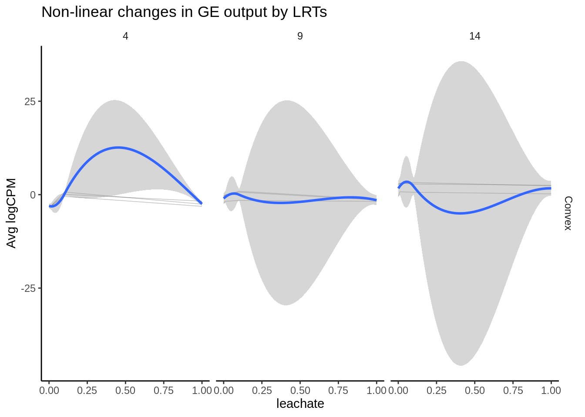
Important
o genes had likelihood of non-linear effect (p < 0.05)
And only 3 genes had likelihood of non-linear effect (p < 0.1)
This was the same when hpf was an integer, not a factor!
… the most robust estimate we have for non-linear effects of environmental conditions on gene expression over time comes from filtering for significant DEGs in edgeR and significant LRTs.